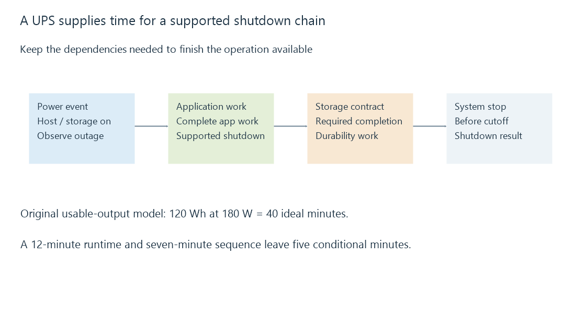

UPS power continuity and orderly shutdown
A UPS supplies temporary power during an interruption, allowing a supported shutdown sequence to complete before its available energy is exhausted.
An uninterruptible power supply provides power through an interruption, usually using stored battery energy. For a media server, that time can keep brief interruptions invisible or allow an orderly shutdown before power is lost.
The UPS does not retain yesterday's version of a deleted film. Its role is power continuity and the opportunity to finish the required shutdown work.
Capacity and runtime are different limits
A UPS has power-capacity ratings, commonly stated in watts and volt-amperes, as well as runtime that depends on the attached load. Watts describe real power; VA describes apparent power. Equipment and UPS specifications determine the relationship and applicable limits.
An original idealized energy example assumes 120 Wh of usable output energy and a constant 180-W load:
Ideal runtime = 120 Wh ÷ 180 W
= 0.6667 hours
= 40 minutes
The usable-energy assumption already excludes losses. Real battery behavior, age, temperature and changing load mean a product's measured runtime curve is more useful than deriving a guarantee from a nominal battery label.
| Quantity | Relevant question |
|---|---|
| Maximum W/VA ratings | Can the UPS support the connected load? |
| Runtime at that load | How long can it support it during this condition? |
| Shutdown interval | Can the software and storage finish before the cutoff? |
| Remaining reserve | What margin remains if the estimate changes? |
A shutdown is a chain of dependencies

If media live on a NAS, powering only the Emby host does not keep the NAS available. A router, switch or external enclosure may also be required for that storage path. The relevant powered equipment follows the operation you need to finish.
In an original budget, 12 minutes of usable runtime minus a seven-minute shutdown sequence leaves five minutes. That margin is conditional on both estimates. Waiting until the last estimated minute makes delayed application or storage work harder to accommodate.
Orderly completion still depends on software
The host needs a supported way to observe the power event and initiate shutdown. Applications must finish or recover their writes, and the storage stack must honor its completion contracts. A battery remaining charged does not prove that dirty cached data reached durable storage.
IEC 62040 provides UPS safety and performance specification scopes; the references are standard catalogues, not a claim that this server arrangement was electrically tested. For Emby, power continuity belongs alongside consistent application backups and the storage system's own recovery guarantees.
See Also
- Storage caches: reusable reads and deferred writes
- Application-data backups and consistent server state
- Server sleep, wake and availability